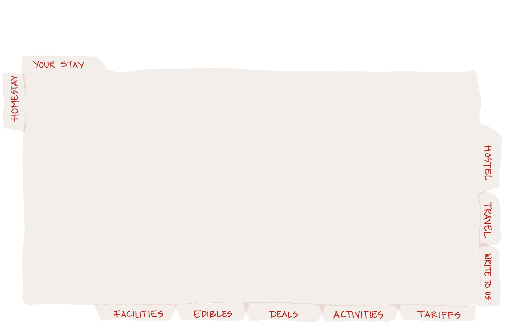
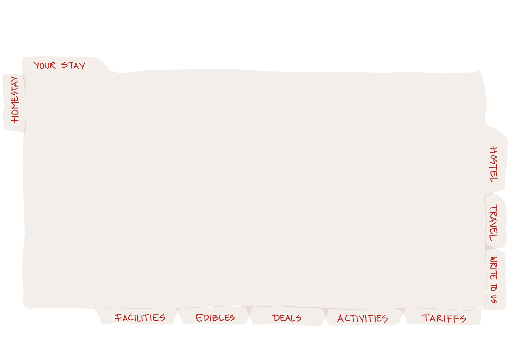
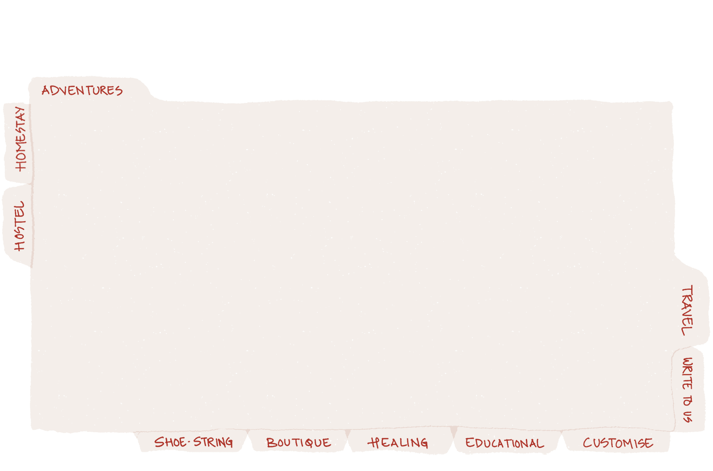
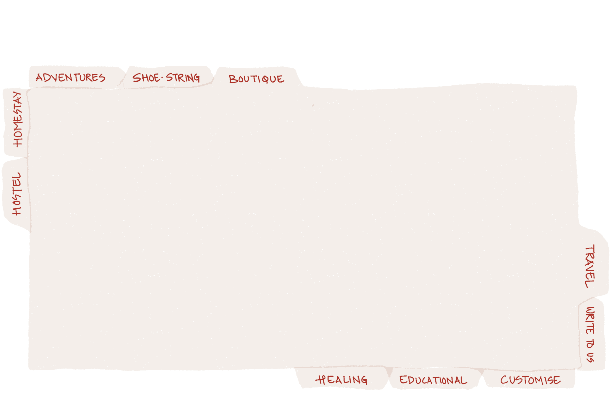
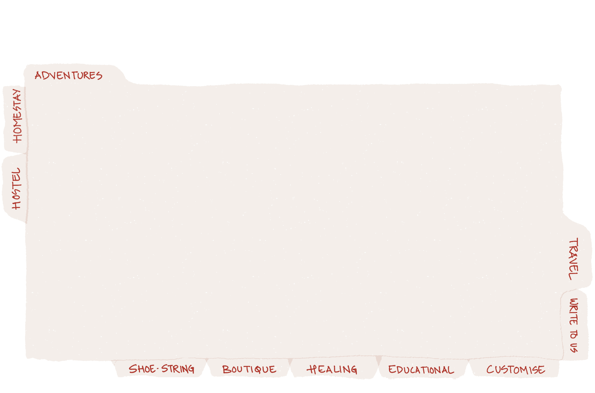
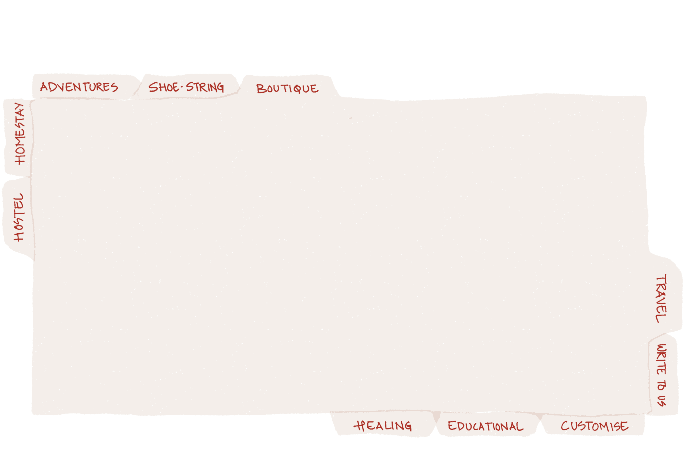

 





HEARTH Homestay
Hearth homestay, Matho is an ancestral home restored into a lush living farm stay for travellers seeking a vacation to a mountain village ambiance, breathtaking walks and treks, holistic health and healing or to simply relax and unwind. Set 30 mins from Leh town, the Hearth farm stay, Matho is a perfect getaway from the routine life in cities into natures splendour. Check out our travel programs and deals to see how a day flows at our farm stay.
Matho or ‘magtro’, ‘mang’ many and ‘tro’ happiness
The legend goes that lama Dugpa Dorje, a buddhist master of the Shakya linage had a vision of a deer on the hilltop near his meditation cave and that is where Matho monastery and village stands, since 1410. Matho village has since grown to 300 households, mostly dependent on agriculture. Friendly villagers and a vast expanse of barley fields and Poplar trees, surrounded by barren snowcapped mountains characterises the village and its habitants. Unlike many other parts of Ladakh, the village remains untouched by the tourist inflow due to its off the highway approach. Matho nagrang is the annual monastic festival (April) where the two oracles or ‘Rongtsan’ foretell the future of harvest and climatic events based on which the agricultural cycles are set.
______________________________________________________________________________________________________________________________________
Premium rooms Community Kitchenette Wifi Healing lounge BBQ station Library Audio Visual room Kitchen garden and green house Office unit Residents access Parking space Laundry service Doctor on call
______________________________________________________________________________________________________________________________________
* Our herbs, vegetables and cereals are grown at the farm, village and other farmers around Ladakh. The rice and oil we use comes from farms in Himachal and Srinagar. * No chemical, GM seeds are used in our or any of the other farms we procure our food supplies from. * We follow a zero waste management system at our farm, please avoid consumable packagings and packaged drinking water and conserve electricity and water supply. * All meals are served in the common area and dining is not permitted in guest rooms
______________________________________________________________________________________________________________________________________
THE OTHER SIDE OF LADAKH
THE OTHER SIDE OF LADAKH
15 DAYS FARM RETREAT
THE OTHER SIDE OF LADAKH
15 DAYS FARM RETREAT
HOSTED MEALS
3 DAYS 2 NIGHTS INCLUSIVE FARM STAY IN MATHO _________________________________ Detailed day flow:
Day 01: Arrive anytime around the first half of the day and be escorted to your respective rooms and allotted common spaces. Lunch will be served in the common room and guests will be briefed about the rest of the stay. The briefing will continue to the documentary screening / story telling in the top floor common room. The guests have the evening to themselves and are welcome to join in for Chang and BBQ dinner in the garden.
Day 02: 7 AM our guests will be woken up to diced fruits with warm herbal tea. We believe that chanting and articulation of mantras every morning, opens our sensual connections and deepens our soul and our mornings are spent in chanting and mediation from 7:30AM to 8:30 AM. The guests can carry on with their practice till 9:30 when breakfast is served. After breakfast the guests will visit the hydro mill, sacred stupas, the monastery and the irrigation pond. The walk resumes back in the green house garden where guests can water and harvest vegetables and herbs for Lunch. A certified herbal healer will visit the farm in the afternoon for readings. The guests can ask about health and healing issues to the healer and talk about their diet etc. After the sessions lunch will be served. The guests will have Chang and BBQ dinner in the garden. Sleeping early and relishing on the herbal tea as much as possible is a requisite for the program.
Day 03: After morning healing practices the guests are free to visit the monastery and enjoy the expanse of the Indus Valley and adjoining village scape of Ladakh. Back from the monastery the guests will start prep for collective lunch - where guests form teams to prep food from our garden - at the farm. The guests leaving that evening will be bid farewell and the guests staying back till next morning are welcome to the Chang and BBQ evening drill. The guests staying back for their flights next morning will be dropped to the airport in time for their departure.
Per person cost: 3 days 2 nights: 8,600 Inr / $141 3 days 3 nights: 10,100 Inr / $166
A time out from the busy routines into nature and healing is a luxury we all crave for. Spend your mornings chanting and meditating, you day in the farm around the village and in the evenings enjoy Chang (local barley beer) and BBQ in the garden. Hike around the village and pay Homage to the oracles of Matho monastery.
A time out from the busy routines into nature and healing is a luxury we all crave for. Spend your mornings chanting and meditating, you day in the farm around the village and in the evenings enjoy Chang (local barley beer) and BBQ in the garden. Hike around the village and pay Homage to the oracles of Matho monastery.
Detailed day flow:
Day 01: Acclimatisation and rest: Arrive anytime around first half of the day and be escorted to your respective rooms and allotted common spaces. Lunch will be served in the common room and guests will be briefed about the rest of the stay. The briefing will continue to the documentary screening / story telling in the top floor common room. The guests have the evening to themselves to use the library / AV room. Dinner will be served to the guests at 8:30 PM. Sleeping early and relishing on the herbal tea as much as possible is a requisite for the program.
Day 02: Village and farm stay hike 7 AM our guests will be woken up to diced fruits with warm herbal tea. We believe that chanting and articulation of mantras every morning opens ours sensual connections and deepens our soul, so our morning are spent in chanting and mediation from 7:30AM to 8:30 AM. The guests can carry on with their practice till 9:30 when breakfast will be served. After breakfast the guests will visit the hydro mill, stupas, the previous monastery and the irrigation pond. The walk resumes back in the green house and the kitchen garden where guests will partake hands on in partaking in watering and harvesting vegetables and herbs for Lunch. The herbal healer will visit the farm in the afternoon for readings. We will also collect birth details from interested guests for Lunar astrological readings to be sent to them later. The guests can ask about health and healing issues to the healer and talk about their diet , etc. After the sessions lunch will be served. The guests have the evening to themselves and arewelcome to join in for Chang and BBQ in the garden. Dinner will be served to the guests at 8:30 PM.
Day 03, 04, 05, 06, 07: Relax and unwind: From third day through seventh the guest have access to all the common spaces and resources and spend your time at your will. Any help you should require for improving your stay will be addressed. All meals will be as scheduled ahead. Hikes around the village, walk up the monastery and around the pastures are a good way of spending a part go your day. Helping in the veg. garden and taking part in ongoing farming practices opens our guests to living as a farmer at their farm.
Day 08, 09, 10: Lakes of Ladakh: On the eight day our guest will be shooter driven to two of the most beautiful lakes in Ladakh through a drive way that has a reputation of being a destination in itself. Boarding and lodging at the lake side is pre arranged with all meals.
Day 11, 12, 13, 14: Consolidation: From eleventh day through fourteenth day the guests will stay at the farm with visits to Leh and other places they wish to visit. Local healers will pay visit to the farm stay or we shall visit them to get implicative readings for our guests. On the fourteenth night a dinner with the family is organised and experiences are shared.
Day 15: Departure: The guest is driven to KBR airport, Leh in time for their departure with positivity and grace.
Per person cost: Ask for price
For travellers visiting Matho on a day trip or the ones just looking for a farm meal experience, we welcome them to enjoy an afternoon at the farm with us.
* Booking for meals have to be made on the morning of a day in advance * Lunch served from 12:30 PM to 2:30 PM

15 DAYS FARM RETREAT
HOSTED MEALS
HOSTED MEALS
______________________________________________________________________________________________________________________________________
Take a walk through the village and be greeted by the friendly villagers through the way Hike up the monastery in the morning to partake in the morning Pooja. Enjoy the locally engineered hydro mill and take a dip in the community irrigation reservoir. The farm is equipped with an audio visual room and a library to muse on sunny afternoons. Laze on the rooftop as you bask in the splendour of the Himalayan ranges Request a visit by local healers, story tellers, astrologers to engage in local medicine and folklore Visit the family kitchen garden and green house to harvest your next meal from the fields. Plant a tree Enjoy BBQ evening with the family and other guests in the garden Just 30 mins from Leh town you can always visit the township to pick up something Beautiful treks run through the summer pastures of the village that can be arranged Get yourself a traditional costume and partake a visit to the neighbouring family.
______________________________________________________________________________________________________________________________________
TARIFF CARD